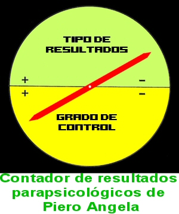

¿Cuán ridículo se puede llegar a ser?

Quizá tengamos una respuesta a esta sencilla y básica pregunta, tomada directamente del interesantísimo sitio de SkepticWiki en http://www.skepticwiki.org/index.php/Main_Page, el cual le recomiendo que visite a menudo, especialmente desde que se encuentra destacado uno de los hilarantes y muy efectistas vídeos de Richard Wiseman. Por favor, como será convulsionado por la risa debido a la verdaderamente increíble ingenuidad del equipo de Comfort/Cameron, lea esto en privado. SkepicWiki nos dice:
“Plátanos: La Peor Pesadilla Del Ateo” es una particular variante de un argumento de diseño que describe la forma en que las características del plátano revelan su verdadero origen cósmico. El argumento se remonta al [creacionista] Ray Comfort y al programa de televisión cristiano evangélico del ex actor “Los Problemas Crecen” Kirk Cameron, y que se resume como sigue:
Tenga en cuenta que el plátano:
Tiene forma para la mano humana Tiene superficie antideslizante Tiene indicadores externos del contenido interno:
Verde - demasiado pronto, Amarillo - justo a punto, Negro - demasiado tarde
Tiene una lengüeta para retirar el envoltorio Está “puntuado” en el envoltorio Tiene un envoltorio biodegradable Tiene la forma de la boca humana Tiene un punto en la parte superior para facilitar la entrada Es agradable para las papilas gustativas humanas Es curvo hacia la cara para facilitar el proceso de comer
Decir que el plátano se produjo por accidente es incluso menos inteligente que decir que nadie diseñó la lata de Coca Cola. [Cita directa de Kirk Cameron]
Este argumento es de tal dudosa calidad que puede ser fácilmente confundido con una parodia, y difícilmente merece una discusión seria en absoluto. Sin embargo, en el raro caso de que usted se encuentre con un creacionista lo suficientemente iluso para tragárselo, entonces puede serle útil tener en cuenta algunos de los problemas del argumento:
En un plátano silvestre, observe las semillas negras, duras como una roca. Puesto que los plátanos silvestres son incomibles por los humanos y contienen todas esas grandes semillas, este hecho parece ser contrario a la creencia de que los plátanos fueron diseñados con los humanos en mente. Los plátanos sin semillas, mientras que son preferidos por los humanos, son inútiles para el platanero, que, siendo estéril, tiene que ser cultivado artificialmente por clonación vegetal (es decir, teniendo cortes).
Los plátanos cultivados no fueron diseñados por intervención cósmica, sino que fueron producidos por los humanos mediante selección artificial. Los plátanos son uno de los primeros frutos domesticados y cultivadas por los seres humanos hace poco más de 7.000 años. Los humanos han criado los plátanos selectivamente para conseguir plátanos de semillas más pequeñas y más sabrosos, de la misma manera que hemos cultivado uvas y sandías sin semillas.
El plátano moderno es el resultado de una bien documentada mutación al azar durante el siglo XIX. Esos primeros plátanos que la gente conocía en la antigüedad no eran dulces como los plátanos que hoy conocemos, sino que fueron plátanos para cocinar o plátanos macho con un sabor y composición a base de féculas. Los plátanos amarillo brillante que conocemos hoy en día fueron descubiertos como una mutación del plátano macho por un Jamaicano, Jean François Poujot, en el año 1836. Él encontró esta mutación híbrida creciendo en su plantación de plátanos con un sabor dulce y un color amarillo - en lugar de verde o rojo, y que no requiere ser cocinado como el plátano macho. El rápido establecimiento de esta nueva fruta exótica fue bienvenido en todo el mundo, y fue cultivado masivamente para los mercados mundiales.
Si a este argumento se le diera realmente seria consideración, entonces es realmente una maravilla el por qué muchos otros frutos y semillas comestibles tienen espinas o cáscaras duras. Estas son características perfectamente razonables de esperar como producto de la evolución, pero bastante increíblemente embarazosas cuando se consideran como productos del diseño divino.
Como es típico de los argumentos del diseño, es injustificable antropocéntrico. En particular, tanto como los colores de un plátano servirían como indicador de su contenido para los humanos, es muy probable que sirvan como un indicador para los animales. En este caso, los colores del plátano son un producto de la evolución, no la previsión en el futuro consumo humano. En la naturaleza, es beneficioso para los frutos con semillas duras (como el plátano silvestre) tener un exterior atractivo. Esto anima a los animales a comerlos, difundir sus semillas y permitir al fruto reproducirse (para más información vea nuestro artículo principal sobre las Medidas de Dispersión). Esto indicaría que la apariencia del fruto no es más que selección natural trabajando, en lugar de un diseñador divino tratando de impresionarnos con superficies brillantes.
Más prejuicio antropocéntrico es la observación de que los plátanos tienen forma para la mano humana, y forma para la boca humana. No hay razón para creer que el plátano está planeado para las bocas y manos humanas más de que está planeado para las bocas y manos de los monos.
Muchas de las evidencias citadas por el diseño son superfluas, como señalar que el plátano tiene una envoltura biodegradable. ¿Qué hace al plátano más especial que los miles de millones de otros envoltorios de organismos que son biodegradables en la naturaleza?
La comparación entre las latas de refrescos y los plátanos es una falsa analogía. La teoría de la evolución no se ocupa de los orígenes de las cosas que no se reproducen.
Hay una increíble variedad de cosas mucho más maravillosas y complejas que una simple lata de refresco, para las cuales no necesitamos asumir ningún diseño o propósito inteligente. Todas ellas comparten al menos esta propiedad: mil millones de años de herencia evolucionaria. A falta de esto, la lata de refresco no puede pertenecer a esta categoría, y debemos admitir otra explicación.
Y por último, para aquellos con una mente calenturienta, el argumento está maduro (juego de palabras no pretendido) para la parodia. El autor de GodlessBastard.com ha reunido una contundente parodia sobre el fruto del plátano como un juguete sexual perfectamente diseñado.
No voy a ofrecer ningún comentario sobre esta última frase…
Por alguna razón, casualmente se algo sobre el Gros Michel, o variedad “Gran Mike” de plátano cultivado que mi generación tiene que conocer tan bien. Esa fue la principal variedad - cuidadosamente seleccionada por manos humanas, y no por la autoridad divina - exportada a los EE.UU. y Canadá, hasta la década de 1950. Estaba mejor adaptada a la navegación, podía ser recogida y transportada verde - madurando a lo largo del camino y llegando justo en el estado correcto - y no se magullaba fácilmente. Luego comenzó a mostrar una susceptibilidad a un hongo que atacó las raíces del platanero en las plantaciones, y fue sustituido por otra. Se había necesitado mucho menos cuidado para enviar la Gros Michel de piel más gruesa que el plátano Cavendish común ahora.
Cree, pueblo - Comfort tiene que pensar de esta manera; Cameron decidió hacerlo, y su condición de celebridad supera de lejos la de Comfort. Si aún duda de que estos chicos son serios, vaya a http://youtube.com/watch?v=aLqQttJinjo y vea el vídeo de 2 minutos. Una vez más, esto es apto para inducir risa incontrolable, especialmente la errónea atribución de la creencia en dios a Albert Einstein, ¡así que está advertido…!
Espero que mis lectores consulten a menudo http://www.skepticwiki.org para actualizaciones frecuentes en estas cuestiones…
Más agujas en tu cara

El lector Richard Hillier nos avisa:
Mientras navegaba por las noticias, encontré este artículo, el enlace directo es: http://tinyurl.com/4zlz8t.
La historia es acerca de la acupunturista y celebridad “facialista” londinense Linda Carter, sobre quién se dice que muchas celebridades, incluida Angelina Jolie, han apelado en favor de sus servicios. Esta “cuidadora de la piel evangelista”, dice, está tratando de vender su “Acupuntura Cosmética Facial”, la cual
…Combina 800 años de antigüedad con tecnología punta y espiritual… dirigidos a las personas que se toman en serio la lucha contra el envejecimiento, pero quieren una alternativa natural a la cirugía invasiva, duras pieles químicas o Botox… Un profundo masaje en el tejido de la parte superior de la espalda, el cuello y los hombros para relajar la mente y el cuerpo, y aliviar cualquier tensión subyacente… es seguido por acupuntura corporal, durante la cual se insertan agujas en puntos clave para aumentar el flujo de energía… agujas finas como el cabello se insertan en puntos específicos en la cara y son manipulados para despertar los músculos… El proceso lleva a la sangre a subir a la superficie y trabajar para aumentar la producción de colágeno y la renovación celular.
Sí, una aguja clavada en mi cara despertaría mi músculo a gritos, se lo puedo asegurar.
El tratamiento inicial cuesta 250£ [500$ de los EE.UU.] y pueden encontrar más detalles en http://www.incredibleyou.co.uk
As Richard points out, recently imposed restrictions indicate that the UK is finally getting their act together when it comes to “psychics” and “mediums,” but they still allow nonsense like this to be advertised unchecked, with no disclaimers about whether these treatments are scientifically proven or not. I can see much hope on the horizon, but until such practices as homeopathy are brought into focus and handled there, the UK remains heavily afflicted by quackery…
Como señala Richard, las restricciones impuestas recientemente indican que el Reino Unido está finalmente comenzando a hacer las cosas adecuadamente cuando se trata de “psíquicos” y “mediums”, pero todavía permiten que sinsentidos como éste sean publicitados sin control, sin descargos acerca de si estos tratamientos están científicamente probados o no. Puedo ver mucha esperanza en el horizonte, pero mientras prácticas como la homeopatía no son traídas al punto de mira y tratadas allí, el Reino Unido permanece fuertemente afectado por el curanderismo…
¡Saunders en acción!

Richard con 2 trofeos de TAM6
Como la mayoría de nosotros sabemos, el australiano Richard Saunders -que tiene muchas referencias en la columna- ha llevado su actitud escéptica a la TV, allá en Australia, y estamos esperando su próxima serie, que consistirá en la búsqueda de un verdadero psíquico - una rara variedad de protoplasma desvaneciente. En una reciente entrevista, Richard dijo:
Mi función es ser un juez escéptico, alguien que puede evaluar a los concursantes y dar una explicación racional de lo que hacen. Soy un juez muy duro porque estoy buscando sucesos psíquicos o paranormales definitivos… No intenta ser un programa del tipo Cazadores de Mitos. Es difícil porque estoy involucrado… Normalmente en estos espectáculos hay un escéptico simbólico, y en el pasado yo he sido uno. Una de las cosas sobre este espectáculo es que debo presentar mi punto de vista.
Richard - por quien los asistentes de TAM6 resultaron encantados justo el mes pasado - dice que hay un número relativamente reducido de indiscutibles farsantes ahí fuera, y cree en la mayoría de los psíquicos como dedicados, muy trabajadores y sinceros:
Una gran cantidad de personas cree sinceramente que tiene poderes psíquicos. Efectivamente han estado utilizando una técnica llamada “lectura en frío”, que es una técnica psicológica utilizada para obtener información de las personas. Y eso es muy interesante, ya que a menudo puede engañar tanto la psíquica como a la persona que está siendo leída. Eso no es decir que no son sinceros en sus creencias.
El papel de “Creyente” en el espectáculo australiano es adoptado por Stacey Demarco, que enseña metafísica y ha escrito libros sobre la manera en que el ingenuo debería aplicar la hechicería en la sala de juntas y el dormitorio. Ella dice:
Soy un tipo racional de experta, no soy el tipo de bruja púrpura de los sesenta. Sólo quiero que la gente se acerque a esto con una mente realmente abierta. No es un espectáculo circense o una actuación de algún tipo. Los concursantes son gente normal, tienen maridos, esposas, hijos, mascotas, una casa en los suburbios y son considerados raritos, fenómenos, satánicos sólo porque tienen esas habilidades.
Pues no, Stacey. Más correctamente, porque creen - quizá genuinamente - que tienen esas capacidades. El espectáculo está diseñado para determinar la realidad sobre esas creencias, y Richard Saunders observará con atención el evento para ver si se está mostrando alguna evidencia de brujería.
Pero ya están entrando en el proceso peligrosas acusaciones de prejuicios. Sólo se han grabado unos pocos episodios, pero se han escuchado quejas de que la presión de realmente hacer lo que ellos dicen que pueden hacer, ha interferido con la puesta en escena de milagros por parte de los concursantes. A pesar de que dependen de estos poderes para ganarse la vida, los actores australianos tienen miedo de que tener que demostrarlos puede conducir al fracaso. Por lo tanto nunca…
El presentador del programa, Andrew Daddo, ha declarado:
Cuando fui propuesto para ir al programa estaba esperando algo muy sensacionalista, muy explosivo, pero lo llevaron muy respetuosamente, muy científicamente. Vamos a decir la verdad y es que han pasado por un montón de problemas para hacer de esto una producción de calidad. Incluso aunque Richard viene con todo el material científico, mi trabajo es explicar cómo estas personas obtienen los mensajes y lo que hacen, este es su proceso.
Todo muy bien, pero cierra ese comentario con esta increíble declaración:
Por ejemplo, esta persona está utilizando la psicometría precisamente como científico.
Eso es como decir, “Este médico está utilizando verdadera homeopatía, que sustituye a los antibióticos, por supuesto.” ¡Mucha suerte, Richard! Estese preparado, a lo largo de unos seis episodios - si alguna fuerza psíquica todavía no consigue manifestarse - para escuchar ruidos acerca de que este enfoque científico es inaplicable a las fuerzas misteriosas que están siendo buscadas, y la opinión de que las cosas deben relajarse un poco para que las habilidades espirituales sean más propensas a mostrarse. Mi experiencia ha demostrado que existe una relación inversa entre el “control” y los “resultados positivos” - nunca mejor ilustrado que por el contador de Resultados Parapsicológicos de mi amigo Piero Angela:
Anticipo de TAM6

Vaya a http://www.skeptic.com/eskeptic/08-07-02.html para encontrar un informe de Derek & Swoopy sobre las sensacionales contribuciones hechas por la presentación del Dr. Neil DeGrasse Tyson y el Cazador de Mitos Adam Savage al impresionante éxito de TAM6 - recién concluido. En su presentación, Tyson desterró la idea de que la ciencia es un asunto aburrido y tedioso; simplemente nos hizo brincar de forma estrafalaria con su discurso humorístico e informativo. Todos tendremos ganas de escucharle de nuevo. En cuanto a Adam, fue - como siempre - el hombre muy accesible y genial que siempre hemos conocido, y su presentación fue recibida con entusiasmo. Gracias, a ambos.
Sólo una nota para el Dr. Tyson: El Canal de Historia está actualmente emitiendo una amplia cobertura sobre ciertos desordenes que se encuentran en nuestro universo - y sus comentarios se han pasado de vez en cuando. Realmente me gustaría saber qué estudiante de segundo curso de la escuela superior escribió el texto pronunciado por el narrador. Se refieren al “calor” como el “catalizador” que da lugar a los vientos - es la causa, no un catalizador; se hace una referencia al “aire alrededor de Júpiter,” y nos dice que “Venus trata de refrescarse”; si nos referimos a la diosa, es mucho más probable…
Cielos…
Tiempo para la risa tonta
Desde http://tinyurl.com/5f4k9d recogí un más que excelente artículo escrito por Al Kamen. ¡Desearía poder escribir con esa calidad e ingenio! Sería mejor que mis lectores vayan directamente allí y disfruten esta hilarante explicación de lo que sucede cuando los moralistas son frustrados y alarmados. ¡Disfrutadlo!
Para terminar…
Tengo que salir corriendo, recién llegado de Boston/MIT, Los Angeles y Las Vegas… Ocupado, ocupado, ocupado. Un montón de comentarios sobre la foto de Geller de la semana pasada - simplemente no podía creer que él iba a publicar realmente ese ridículo artículo, pero esto demuestra una vez más el limitado - y soso - repertorio que tiene.
Estoy negociando en la actualidad serias propuestas de TV desde Turquía, Países Bajos, Reino Unido y Hungría, diseñadas para responder al reciente “Sucesor” absurdo. Les mantendré informando…

Comentarios
Comments powered by Disqus